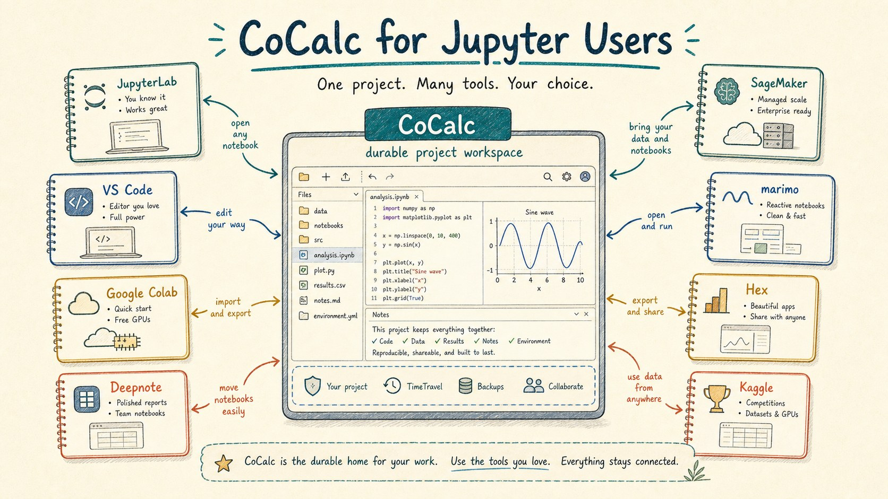
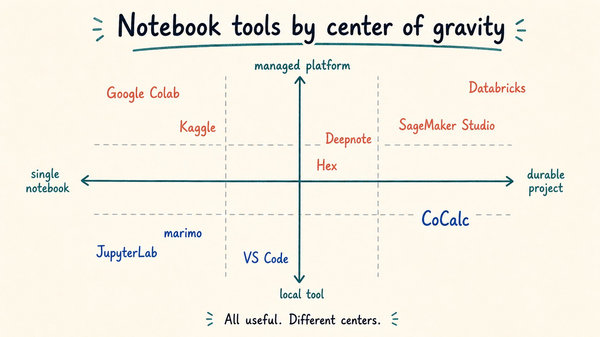
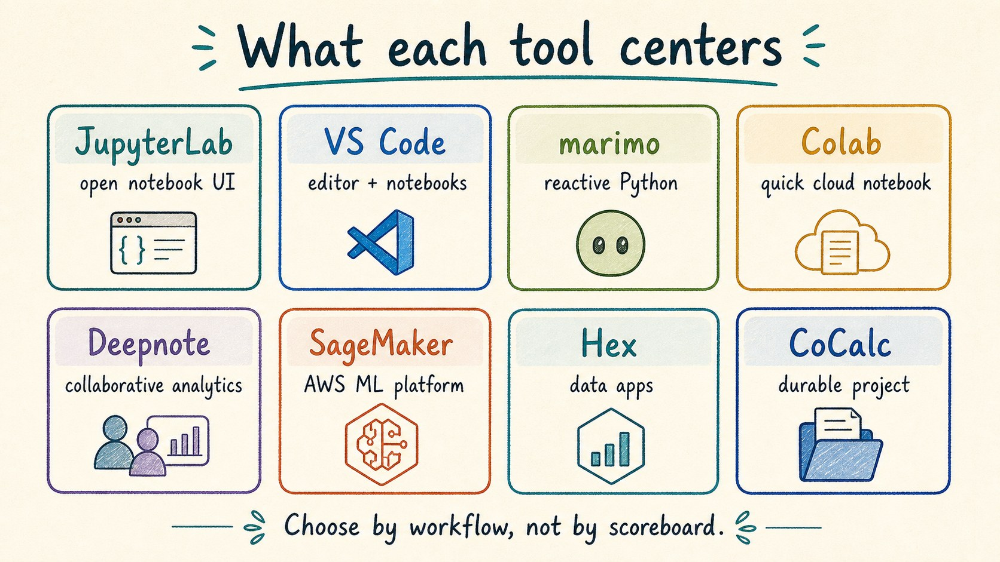
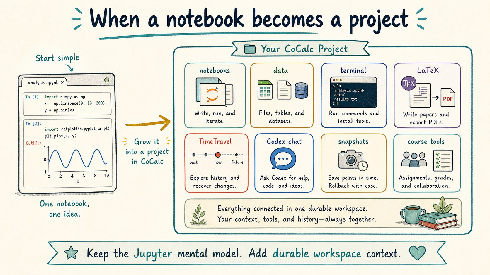
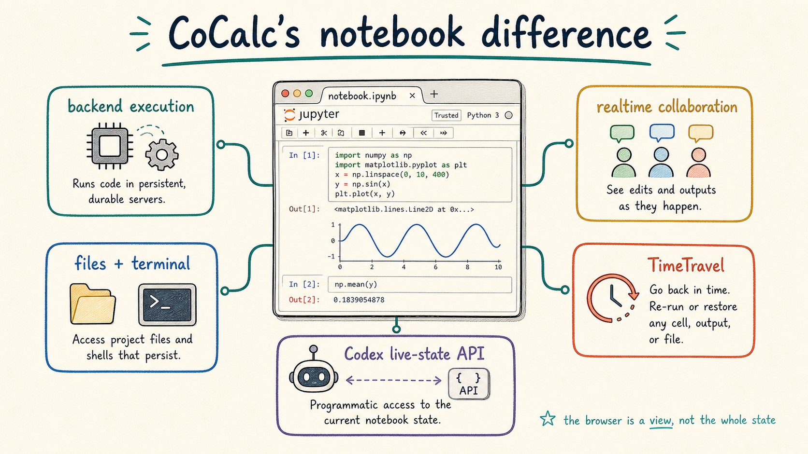
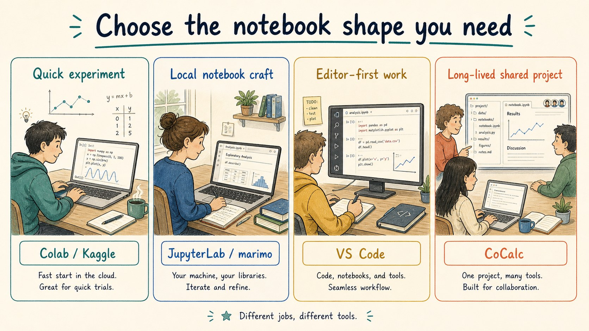

A CoCalc-AI field guide for notebook people
CoCalc for Jupyter Users
If you already know JupyterLab, Colab, Deepnote, SageMaker, VS Code, marimo, Hex, or Kaggle, the fastest way to understand CoCalc is to ask a different question: what happens when the notebook becomes part of a durable collaborative project?

Notebook tools are good because they make different bets. JupyterLab is an extensible notebook environment. Colab and Kaggle make hosted notebooks easy to start. Deepnote and Hex focus on collaborative data work. SageMaker Studio and Databricks connect notebooks to large cloud data and ML platforms. marimo rethinks notebooks as reactive Python. VS Code brings notebooks into an editor-first workflow.
CoCalc's bet is that the durable project is the right home for serious computational work. A notebook is still a notebook, but it lives next to terminals, files, LaTeX, whiteboards, TimeTravel, course tools, snapshots, backups, and Codex chat.
Compare the center, not the checklist
Feature matrices get stale quickly, and they are often less helpful than they look. The better question is: what is the product organized around?
A notebook-first tool optimizes the notebook surface. An editor-first tool optimizes code navigation and repository work. An analytics-first tool optimizes data sources, SQL, and sharing results. A cloud ML platform optimizes managed jobs, permissions, endpoints, and cloud resources.
CoCalc optimizes the long-lived technical project. That makes it especially useful when notebooks are only one part of the actual work.

Many good products, different centers
If the task is a quick cloud notebook, Colab or Kaggle may be the most direct path. If the task is a reactive Python document, marimo is intentionally designed around that model. If the task is AWS-managed ML, SageMaker Studio belongs in the conversation. If the task is editing a repo with notebooks nearby, VS Code is natural.
CoCalc becomes more interesting when the notebook is not enough: when you also need persistent Linux tools, shared files, long outputs, a written paper, a course workflow, a history trail, a collaborator watching the same state, or an agent that can operate directly on the project.

When a notebook becomes a project
A real notebook rarely lives alone. It depends on data files, package installs, shell commands, generated figures, drafts, scratch scripts, and notes from the person who knows why a cell was written that way.
CoCalc keeps the Jupyter notebook mental model, then wraps it in a project. The project gives the notebook a filesystem, terminals, synced editors, TimeTravel history, chat, collaborators, and admin controls. That makes the notebook easier to trust after the first exciting result.

What CoCalc adds to Jupyter
CoCalc's notebook UI stays close to standard Jupyter conventions, but the surrounding system changes the failure modes. Execution is backend-owned, so output can keep being captured after a browser refresh or closed tab. Realtime collaboration is built into the project model. TimeTravel records edits over time. Markdown cells can be edited as rich text. Large notebooks are rendered efficiently as you scroll.
The agent story is also different. Codex can use
cocalc project jupyter to inspect and act on the live
notebook state. It does not have to pretend that the saved
.ipynb file is always the exact state you are using in
the browser.

Choose by workflow
The nicest comparison is usually not "which product wins?" It is "which product starts closest to the work I have?"
Choose a quick hosted notebook when you want the least friction for a single experiment. Choose local JupyterLab or marimo when the notebook document itself is the craft. Choose VS Code when a code repository and editor workflow are central. Choose analytics or ML platforms when their data, dashboard, warehouse, or cloud services are the main event.
Choose CoCalc when the notebook needs to live inside a durable computational project: one place for notebooks, terminals, files, writing, chat, collaborators, history, agents, teaching, and deployable compute.

How nearby products help explain CoCalc
CoCalc keeps the familiar notebook idea, then adds project-level collaboration, history, agents, and operations.
CoCalc is less about instant disposable notebooks and more about work that needs to survive and grow.
CoCalc overlaps with collaborative notebooks, but its center is a broader technical project, not only analytics delivery.
CoCalc can use cloud compute, but it is not tied to one cloud or warehouse platform as the organizing principle.
Where CoCalc fits in the product family
The same notebook-centered project model appears at several sizes. CoCalc Plus is the free personal path for one user on a local or SSH reachable machine. Hosted CoCalc is the managed cloud path. Launchpad is the small-team self-hosted path. Rocket is the enterprise-grade scale-up.
That matters for notebook users because the UI and concepts do not have to change when the deployment changes. A project can start as a personal workspace, become a hosted collaboration, or move into a self-hosted site with stronger local policy.
CoCalc paths
- Plus: free, local or SSH, one user.
- Hosted CoCalc: managed projects and compute.
- Launchpad: self-hosted small team site.
- Rocket: enterprise scale with the same product model.
Product names here are used descriptively. The goal is orientation, not ranking. For current details, read the official docs for JupyterLab, VS Code notebooks, marimo, Google Colab, Kaggle notebooks, Deepnote, Hex, SageMaker Studio, and Databricks notebooks.